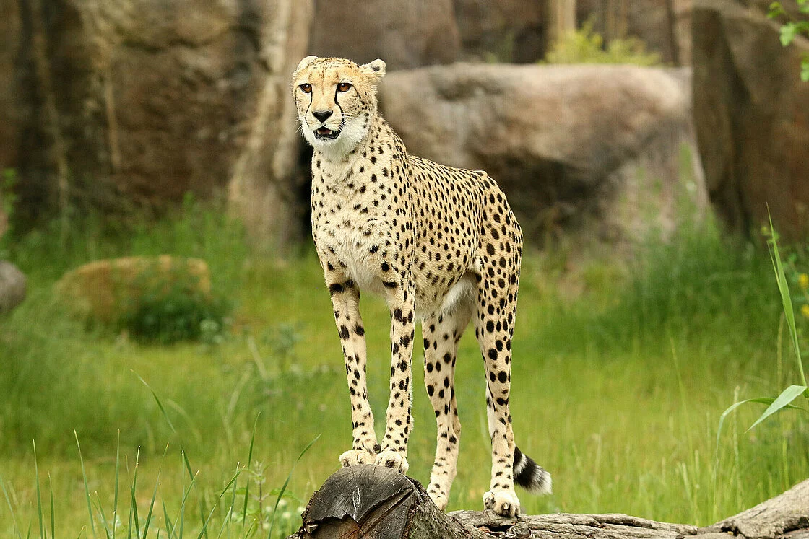
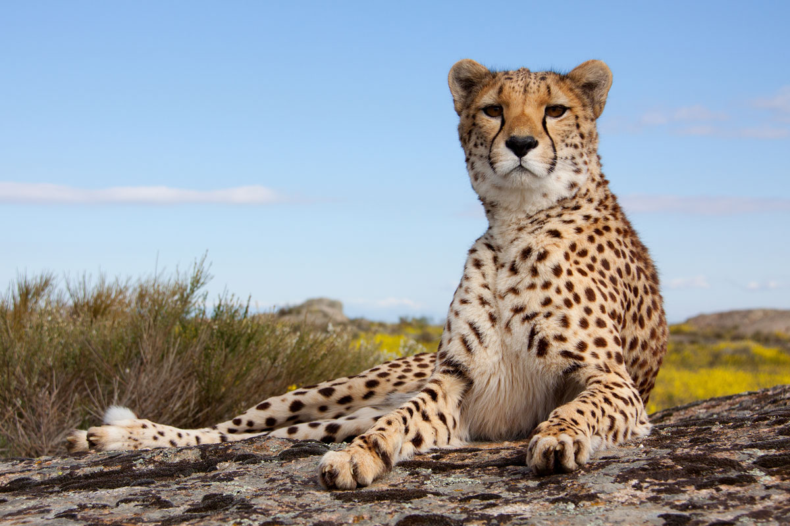
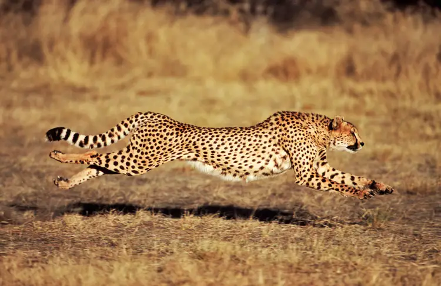

Gepard
| Verwandschaft | Katzen |
| Verbreitungsgebiet | Kenya, Botswana und Namibia |
| Lebensraum | offene Ebene und Savanne |
| Nahrung | kleine bis mittelgrosse Antilopen |
| Gewicht | 40 - 60 kg |
| Grösse | Schulterhöhe: 70 - 90 cm |
| Tragzeit | 90 - 95 Tage |
| Anzahl der Jungen | 1 - 6 Junge |
| Lebenserwartung | 15 Jahre |
| Feinde | Mensch, Löwe, Hyäne, Leopard |
Verbreitungsgebiet
Die grössten Gepardenpopulationen leben heute in Kenia, Botswana und Namibia.
Geparde bewohnen offene Ebenen und Savannen sowie Trockengebiete.
Ernährung
Im Gegensatz zu allen anderen grossen Katzen jagen Geparden tagsüber.
Sie ernähren sich hauptsächlich von kleinen bis mittelgrossen Antilopen,
wie Springböcken, Impalas oder Thomsongazellen.
Die kräftezerrende Verfolgungsjagd erschöpft den Geparden so stark,
dass er nach dem Erlegen der Beute mehrere Minuten heftig nach Luft schnappt,
bevor er mit dem Fressen beginnt.
Hat er die Beute verfehlt, gibt er nach 500 bis 600 Metern auf.
Verhalten
Geparde sind typische Einzelgänger, die Weibchen noch mehr als die Männchen.
Männchen leben manchmal über längere Zeit zu zweit oder zu dritt zusammen,
vor allem in nahrungsreichen Gebieten.
Gemeinsam ist es einfacher,
ein Territorium zu verteidigen und Weibchen anzulocken.
Dieses Verhalten stellt bei Katzenartigen eine Ausnahme dar.
Ausser den Löwen sind alle Katzenartigen Einzelgänger.
Die Fortpflanzung bei Geparden ist unabhängig von der Jahreszeit.
Nach 90 bis 95 Tagen werden ein bis sechs Junge geboren,
die vom Weibchen alleine aufgezogen werden.
Nach acht Wochen verlassen die Jungen ihre Höhle und begleiten ihre Mutter,
die sie dann im Alter von 18 Monaten verlassen.
Geparde sind typische Einzelgänger, die Weibchen noch mehr als die Männchen.
Männchen leben manchmal über längere Zeit zu zweit oder zu dritt zusammen,
vor allem in nahrungsreichen Gebieten.
Gemeinsam ist es einfacher,
ein Territorium zu verteidigen und Weibchen anzulocken.
Dieses Verhalten stellt bei Katzenartigen eine Ausnahme dar.
Ausser den Löwen sind alle Katzenartigen Einzelgänger.
Die Fortpflanzung bei Geparden ist unabhängig von der Jahreszeit.
Nach 90 bis 95 Tagen werden ein bis sechs Junge geboren,
die vom Weibchen alleine aufgezogen werden.
Nach acht Wochen verlassen die Jungen ihre Höhle und begleiten ihre Mutter,
die sie dann im Alter von 18 Monaten verlassen.
Körperbau
Geparde sind die schnellsten Säugetiere.
Ihre biegsame Wirbelsäule und die langen Beine ermöglichen ihnen einen extrem schnellen Laufstil.
Sie können als einzige Katzenart ihre stumpfen,
harten Krallen nur bedingt einziehen.
Die freiliegenden Krallen verhindern das Wegrutschen
beim Sprint und tragen so zum Jagderfolg bei.
Wenn Geparde jagen, können sie eine Höchstgeschwindigkeit von über
100 Kilometer pro Stunde erreichen.
Wegen der fehlenden Spitze der Krallen sind Geparde schlechte Kletterer.
Geparde wiegen nur etwa 45 Kilogramm und müssen sich vor den grösseren und schwereren Löwen,
Leoparden und Hyänen in Acht nehmen.
Jedes Tier hat sein individuelles Gesichtsmuster mit Tränenstreifen
(schwarze Streifen zwischen dem inneren Augenwinkel und dem Maulwinkel).



Geparde sind die schnellsten Säugetiere.
Ihre biegsame Wirbelsäule und die langen Beine ermöglichen ihnen einen extrem schnellen Laufstil.
Sie können als einzige Katzenart ihre stumpfen,
harten Krallen nur bedingt einziehen.
Die freiliegenden Krallen verhindern das Wegrutschen
beim Sprint und tragen so zum Jagderfolg bei.
Wenn Geparde jagen, können sie eine Höchstgeschwindigkeit von über
100 Kilometer pro Stunde erreichen.
Wegen der fehlenden Spitze der Krallen sind Geparde schlechte Kletterer.
Geparde wiegen nur etwa 45 Kilogramm und müssen sich vor den grösseren und schwereren Löwen,
Leoparden und Hyänen in Acht nehmen.
Jedes Tier hat sein individuelles Gesichtsmuster mit Tränenstreifen
(schwarze Streifen zwischen dem inneren Augenwinkel und dem Maulwinkel).